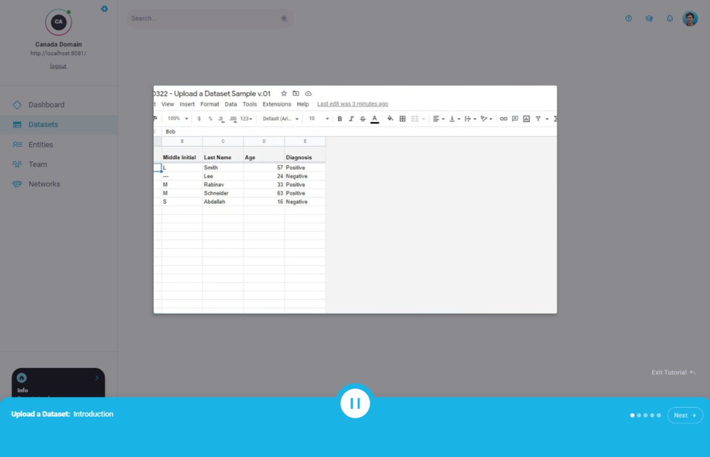
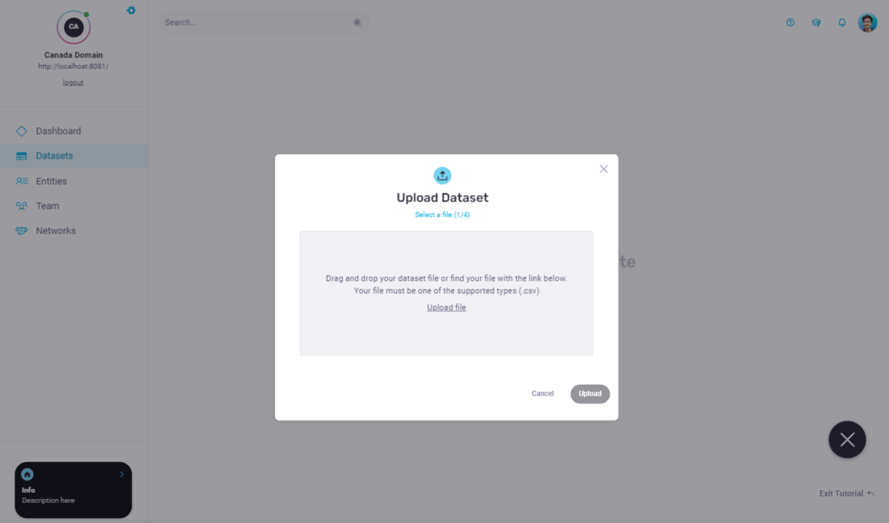
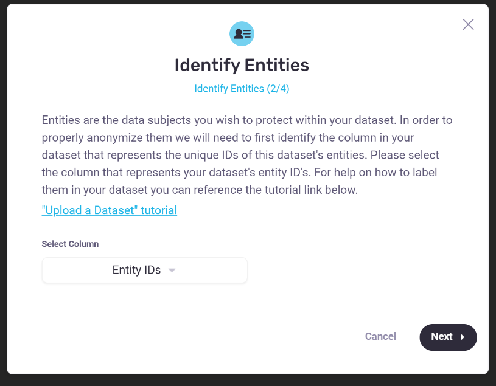
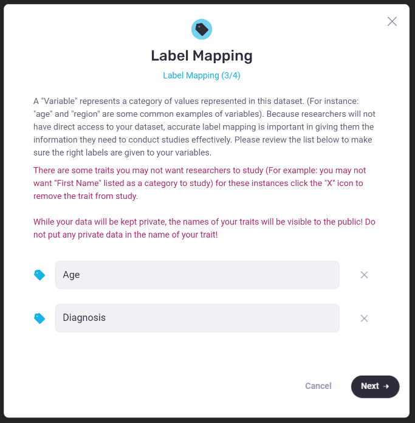
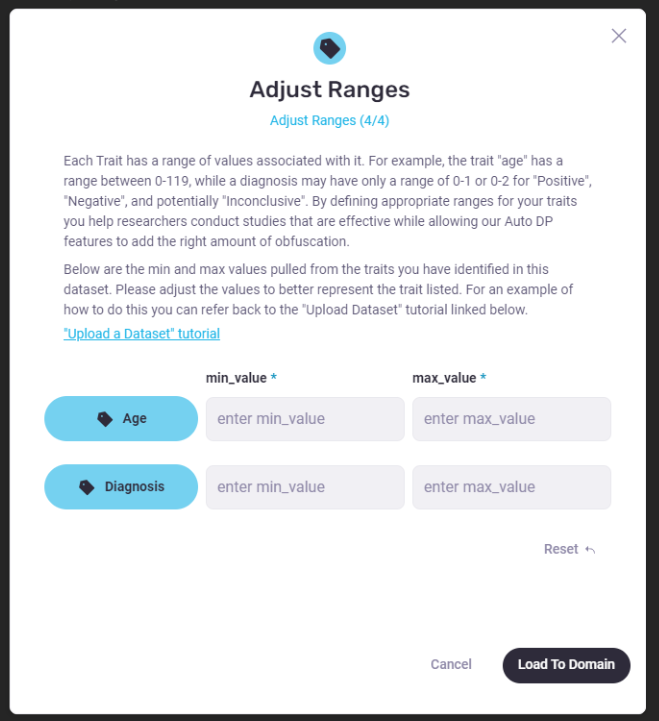
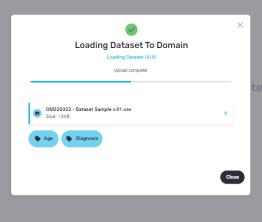

Kickoff // Aligning the Team
The team I would lead was a newly formed team made up of OpenMined members across many disciplines including: front-end development, backend development, data science, machine learning, security, and differential privacy. The team would act as a part-time team whereby the members would remain on their original OpenMined teams as first priority and give part-time to my team as second priority. In total we were a remote team of 6 with 5 stakeholders who would intermittently review what we made. My personal goals in leading this team was to align members on a shared vision for the product and to keep things fun so we could generate a lot of ideas. I knew I would be coming in with a lot of new process and design thinking techniques so I kicked things off with a focus on establishing team cadence, processes, and tooling. Some of the activities done were as follows:
01
A slack channel was created for our specific team so that we could have more directed conversation.
02
A poll was sent to the Slack channel to determine a weekly sync schedule. A poll in Slack was also held to determine a team name. ( We landed on team “Captain Planet”)
03
A kickoff meeting was held to determine what tooling we wanted to use and how we would handle blockers both small and large.
04
A Miro space was created to act as our home base. An onboarding meeting was held to teach the team members how to use the Miro space. Rows represented activities for the week. We would work our way down the Miro space to keep a timeline of total activity.
05
During the same onboarding meeting the team purpose was reiterated upon along with written slides of the decisions around process we had made together. These would live at the top of the Miro board as quick references.
06
To keep things fun each member was assigned an element from “Captain Planet”. Miro stickers were made from these elements for team members to use for voting exercises later down the road. Also to keep things fun we decided to create “Missions” or activities for us as a team to accomplish each week.
Week 1-2 // Understand
Not everyone on this team was a part of previous user research (See “Early Access Program”). I wanted to make sure that the team not only was aligned on how we would run but also up to date and aligned on user sentiments to our product. I coordinated and defined 4 different “Missions” for our team to accomplish in order to better understand the user. Those missions were as follows:
Review Lightning Material
I had the team review the key findings generated by the most recent user research initiative.
Review Potential Competitors
I had created a competitive analysis of potential competitors. I posted screenshots and links within Miro of those competitors and for a mission had the team post sticky notes of what they liked or disliked about the competitor’s solutions.
Identify What We Don't Know
Now that the team had reviewed previous user feedback, I held a Miro workshop where we generated what we didn't know about our users. Specifically in terms of asking “What do we not know about Data Owners and How they would use or Understand Privacy Budgets?”
Frame the Problem
We ended the week with a workshop to get us to narrow down and define a specific design problem. Members proposed problem statements in the form of “How might we” and asynchronously voted on the the problem statements they felt would have the most impact.
Week 3 // Ideate
Going into Week 3 we had a strong problem statement to work with and were ready to begin ideating on potential solutions. Within this timeframe, a Crazy 8 workshop was held, top solutions were voted on, and a scorecard was created to help us track whether what we built was helpful or not towards the original problem.
The problem we decided to focus on was how to help an owner of data (Data Owner) assign a privacy limit to a potential external researcher of that data (Data Scientist). To help with the context of this use case, we can think of the privacy limit as a sort of credit limit given to an external researcher(Data Scientist). This privacy limit acts as a limit to what any one Data Scientist could discover about any one individual or entity(Data Subject) within a dataset. The Data Owner would assign the amount of credit a researcher could use; this would be measure in a unit called “epsilon”. Our Differential Privacy feature would obscure any result so that the researcher could not exceed the privacy limit assigned to them. One of the biggest hurdles to using this feature would be in the lack of understanding around the privacy unit of “epsilon”.
Week 4 // Ideate
We had a strong problem statement and some top-voted solutions. We needed to narrow down which to prototype. A priority matrix was used to map solution ideas. Priority was given based on a matrix of High-Low Impact and High-Low build Effort. We decided to create a mock of one solution that was high impact but also high effort, and to mock a solution that was high impact and low effort. Any solutions that were high impact, low effort and also seemed accessible to begin immediately were translated into GitHub issues so that they could be addressed by our other engineering teams. Once the solution ideas were chosen, we created 2 sub teams. With each team I held sketching sessions where I sketched out ideas while they directed and gave suggestions mid-sketch. We ended the week with 2 solution sketches and with a defined user scenario that could be used to test our prototypes.
Week 5-8 // Build
What we realized during our sketch sessions was that in order to help a Data Owner understand the impact any one unit of epsilon would have on their dataset we would first have to help them fill out the right metadata about their dataset. This would ensure that a Differential Privacy algorithm could work correctly. Differential Privacy is centered around obscuring the individuals or entities within the data (Data Subjects), the success of privacy (summarized) in the frame of Differential Privacy is asking “If you learn XYZ from a dataset, how likely will you be able to identify any one Data Subject in that dataset?”. What we needed a Data Owner to describe in order to assess privacy was the following:
- Data Subjects: Who needs to be protected in this dataset?
- Min-Max Range: For any one attribute about a Data Subject...
- What is the perceivable minimum value for that attribute?
- What is the maximum perceived value for that attribute?
- Example: For age, the perceived minimum could be 0 (the age of birth) while the perceived maximum age could be 122 (age of the longest living human)
Identifying Data Subjects would help our system know who to obscure, defining min-max values would help the algorithm determine how much an attribute needed to be obscured in order to accurately hide any one Data Subject. We wanted to see if an interface could help a Data Owner more accurately define these aspects about their datasets. The workflow we proposed for the Data Owner was as follows:
01
A Data Owner logs in and arrives at their dashboard, if no datasets have been uploaded then they are prompted to upload a dataset. If there for the first time, a prompt with a link to a video tutorial appears.
02
When uploading a dataset an “Upload Dataset” wizard would walk users through providing the correct metadata.
03
The first step of the Wizard would have a user identify which columns in the dataset represent the Data Subjects.
04
The second step would have users correctly match columns to trait names. In this step users could choose to remove columns from upload and rename the header labels(trait names) for those columns.
05
The third step of the wizard would have users identify the perceivable min and max range for each included trait in the dataset.
06
The fourth step in the wizard would have users review and confirm dataset upload.
// Upload Dataset Tutorial
// Upload Dataset Wizard
// Identify Data Subjects
// Map Labels & Remove Sensitive Attributes
// Define Min-Max Values
// Review & Confirm Upload
Summary
Next Steps
Reviewing the prototype internally helped us align, we felt that this approach did in fact help even our own team better define the correct metadata needed for our Differential Privacy Feature. We also recognized the limitations of this approach in that the variability of the different file types and dataset structures could really hinder this being the primary way data was uploaded via our product. We went on to test our assumptions and to share our findings with other teams.
- This prototype was shown to external users to get feedback on whether it helped them understand Differential Privacy. Feedback indicated that it helped them understand how to define Differential Privacy metadata but did not help them understand how the results given to a Data Scientist were affected.
- Because it was an effective learning tool, principles from this prototype like language and upload steps were incorporated into our demos and education materials.